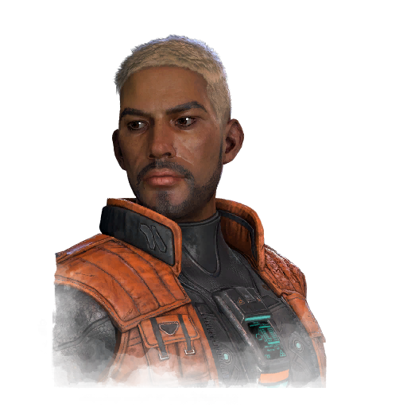

加布里埃尔·索马 Gabriel Soma
- 性别
- Man
- 出身
- Proxima Centauri C
- 演员
- Stevie Boiser (The Monster Factory)
背景故事
2098年，一场灾难性的核战争几乎终结了人类。但人类最终重整旗鼓，并找到了新的前进道路。发明家与革新者们探索出全新的能源生产方式与食物培育手段。其中一位远见者创立了赫克斯利工业有限公司（Huxlee Industries Ltd.）。由于地球大部分地区已不宜居住，全球许多资源也濒临枯竭，赫克斯利将全部利润投入火箭科学、人工智能与基因工程的研究。他们开始探索银河，寻找拥有宝贵资源的宜居行星。他们的计划是前往银河的遥远边缘，开采那些珍贵资源，并为人类创造一个和平而繁荣的未来。人类殖民的每一颗行星都经过精心规划。资源被开采出来，增长中枢被建造起来，用精心设计的DNA制造出个体。每一个人都被赋予不同的社会职能。绝大多数是体力劳动者。另一些则被培育为科学家、工程师、管理者、农学家和医师。这一理念是打造一个能够完美运转的社会。加布里埃尔·索玛出生于比邻星C——人类殖民的第一颗星球——的一座克隆中心。他是一支小规模队伍的成员，负责维护和修理那些被派去建造殖民中枢的机器人与仿生人。加布里埃尔不知道，他童年时期的每一段记忆，都是由克隆他的人植入他意识之中的。与其他所有人一样……
专属技能
通用技能 任意逃生者均可使用
寻宝专家
Artefact Hunter
执念之缚
Bound by Obsession
黑暗感知
Dark Sense
坚持到底
Down to the Last
似曾相识
Déjà Vu
希望
Hope
同族
Kindred
最后站立
Last Standing
轻装上阵
Lightweight
不抛弃任何人
No One Left Behind
过度自信
Overconfidence
掠夺者直觉
Plunderer's Instinct
预兆
Premonition
韧性
Resilience
滑溜之躯
Slippery Meat
小猎手
Small Game
背脊发凉
Spine Chill
这不是真的
This Is Not Happening
硬跑者
Tough Runner
我们能行
We'll Make It
求生意志
Will to Live
附加品
- 暂无数据。